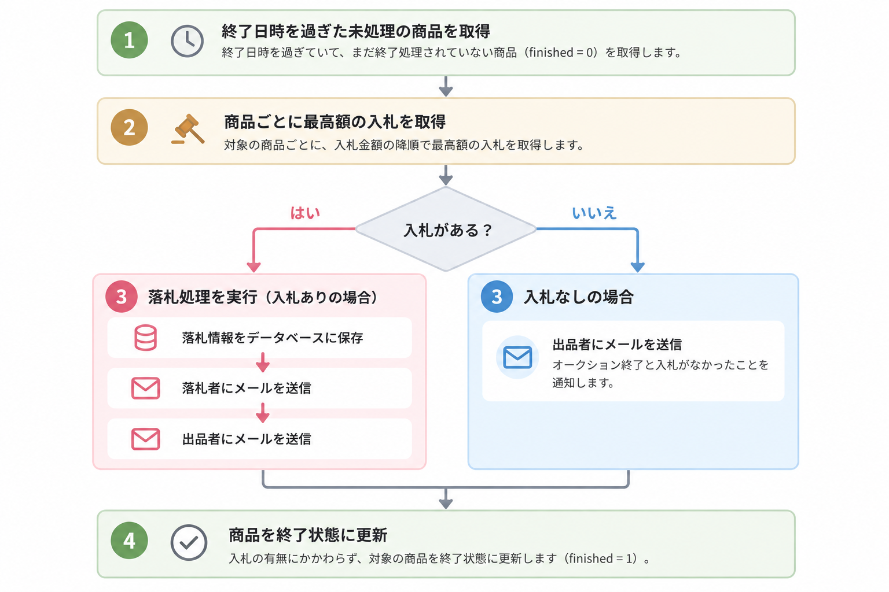
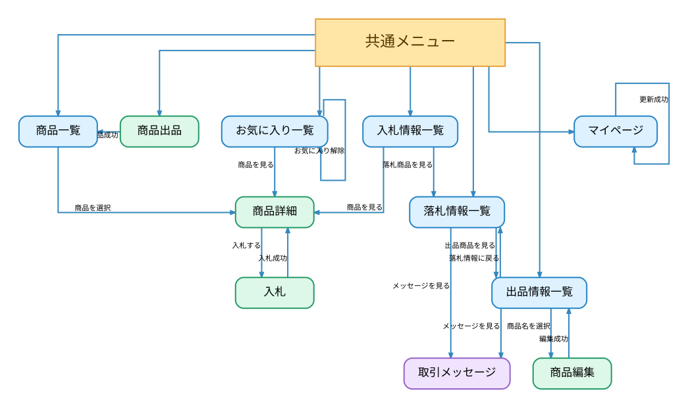

ログイン
登録済みのユーザー名とパスワードを入力し、 アカウント認証を行う画面です。
主な機能
- ユーザー名・パスワードによるログイン認証
- 認証エラーの表示
実装上の工夫
-
パスワードの安全な管理
CakePHPのDefaultPasswordHasherでパスワードをハッシュ化して保存し、平文での管理を避けています。
商品一覧（トップページ）画面
出品された商品を検索・絞り込み・ 並び替えて確認できる画面です。 トップページのため、この画面から各画面に遷移できます。
主な機能
- 商品検索・カテゴリ絞り込み・並び替え
- 10件ずつの一覧表示
- お気に入り登録・解除
実装上の工夫
-
複数条件による商品検索
GETパラメータに応じてCakePHP ORMの検索条件を組み立てています。
-
入札件数による並び替え
leftJoinWith()とCOUNT()、GROUP BYを用いて入札件数を集計しています。
商品詳細画面
商品の詳細情報や入札履歴を確認する画面です。
主な機能
- 商品情報・入札履歴・落札結果の表示
- 開催中の商品への入札
実装上の工夫
-
オークション状態に応じた表示
終了状態や出品者を判定し、入札可能な場合だけ入札ボタンを表示しています。
商品出品画面
商品名・カテゴリ・最低価格・終了日時などを設定し、オークションに商品を出品できる画面です。
主な機能
- 商品情報・画像の登録
- 終了日時の選択・入力
- 最低価格の初期値設定
実装上の工夫
-
終了日時を選びやすい入力UI
JavaScriptで1・2・3・5・7日後を自動設定でき、日時の直接入力にも対応しています。
-
画像ファイル名の重複対策
保存時にタイムスタンプを付与し、同名ファイルの上書きを防いでいます。
商品編集
出品済み商品の商品名・カテゴリ・最低価格・商品画像を 変更できる画面です。 商品情報の更新に加えて、出品した商品の削除もできます。
主な機能
- 出品済みの商品情報・画像の編集
- 確認ダイアログ付きの商品削除
実装上の工夫
-
既存情報を活用した編集
CakePHPのFormHelperで登録済みデータをフォームに表示し、必要な項目だけ変更できます。
-
画像名の見やすさ
保存時のタイムスタンプを取り除き、元のファイル名を表示しています。
入札画面
商品の入札金額を入力し、オークションに参加できる画面です。
主な機能
- 最低価格以上・10ベル刻みで入札
- 入札金額の入力・送信
実装上の工夫
-
最低価格に連動した入力制御
商品ごとの最低入札価格を入力欄の初期値・最小値に設定しています。
入札中の商品一覧
自分が入札した商品を一覧表示し、 現在の入札状況やオークションの結果を 確認できる画面です。
主な機能
- 自分が入札した商品の一覧表示
- 最高入札者・落札結果などの状況確認
- 商品詳細への遷移
実装上の工夫
-
状況をひと目で把握できる表示
入札状況と終了結果から4種類のステータスを判定し、色やアイコンで区別しています。
落札した商品一覧
自分が落札した商品を一覧で確認できる画面です。 落札日時の確認や、出品者との取引メッセージ画面への 移動ができます。
主な機能
- 落札商品の一覧・並び替え
- 取引メッセージへの遷移
実装上の工夫
-
落札情報と取引の連携
落札情報IDを使い、対象商品のメッセージ画面へ直接移動できるようにしています。
取引メッセージ
落札した商品について、出品者と落札者が メッセージを送受信できる画面です。
主な機能
- 取引ごとのメッセージ送受信
- 自分が送信したメッセージの削除
実装上の工夫
-
取引単位でのメッセージ管理
落札情報IDに紐づけてメッセージを管理しています。
-
安全な表示と操作制御
送信者IDで削除ボタンの表示を制御し、本文はh()でHTMLエスケープしています。
お気に入り一覧
お気に入りに登録した商品を一覧で確認できる画面です。 商品の出品状況や終了日時を確認できるほか、 商品詳細画面への移動やお気に入りの解除ができます。
主な機能
- お気に入り商品の一覧表示・解除
- 出品状況の確認と商品詳細への遷移
実装上の工夫
-
ユーザー別のお気に入り管理
ユーザーIDと商品IDを関連付け、ログインユーザーの登録商品だけを表示しています。
マイページ
ログインユーザーの登録情報を確認・編集できる画面です。
主な機能
- 登録情報の確認・編集
- 落札・出品情報への遷移
- ログアウト
実装上の工夫
-
編集モードの切り替え
JavaScriptで入力欄の編集可否と保存ボタンの状態を切り替えています。
-
入力値の検証
CakePHPのValidatorとRulesCheckerで形式やユーザー名の重複を確認しています。
共通処理
アプリケーション全体で共通して使用する機能です。 画面ごとのBGM切り替えや、キャラクターのランダムメッセージ、 共通メニューなどを実装しています。
① 💬 たぬきちのランダムメッセージ
メニューに表示されるたぬきちが、 アクセスした時間帯に応じて異なるセリフを話します。
主な機能
- 朝・昼・夜でセリフを切り替え
- 各時間帯の3種類からランダム表示
実装上の工夫
-
時間帯とランダム選択
JavaScriptのDateで時間帯を判定し、Math.random()でセリフを選択。ページ読み込み時に表示します。
② 🎵 画面ごとのBGM切り替え
表示している画面に応じてBGMを切り替え、 ユーザーが再生・停止を操作できる機能です。
主な機能
- 画面に応じて3種類のBGMを切り替え
- 再生・停止の操作と設定の保存
- 同じ曲では再生位置を復元
実装上の工夫
-
画面ごとのBGM選択
CakePHPのController・Actionに応じて再生する曲を決定しています。
-
再生状態・位置の引き継ぎ
localStorageに設定と再生位置を保存し、同じ曲を使う画面では途中から再開します。
③ ☰ 共通メニュー・レイアウト
アプリケーション内の各画面で共通して使用する ヘッダーやサイドメニューを実装しています。
主な機能
- ヘッダー・サイドメニューの共通表示
- メニュー開閉と各画面への遷移
実装上の工夫
-
CakePHPのLayoutで共通化
ヘッダー・メニューを共通レイアウトに集約し、画面固有の内容はfetch('content')で表示しています。
バッチ処理
オークション終了日時を過ぎた商品を検出し、 落札確定・メール通知・終了状態の更新を自動で行う処理です。
🔄 処理フロー

💡 実装上の工夫
-
① 未処理の商品だけを対象にした終了判定
CakePHPのORMを使用し、終了日時を過ぎた finished = 0 の商品だけを取得することで、 重複処理を防ぐようにしました。
-
② 入札状況に応じた処理の分岐
入札金額の降順で最高額の入札を取得し、 入札の有無に応じて落札情報の登録と メール通知の内容を切り替えています。
-
③ cronによるバッチ処理の定期実行
CakePHPのShellで終了処理を実装し、 cronで定期実行することで、 画面操作なしで落札確定とメール通知を自動化しました。
📩 実行結果
バッチ処理によって送信されたメールの例です。
ER図
データベースのテーブル構成と関連を表した図です。


画面遷移図
あつ森オークションの各画面と、画面間の遷移を表した図です。
